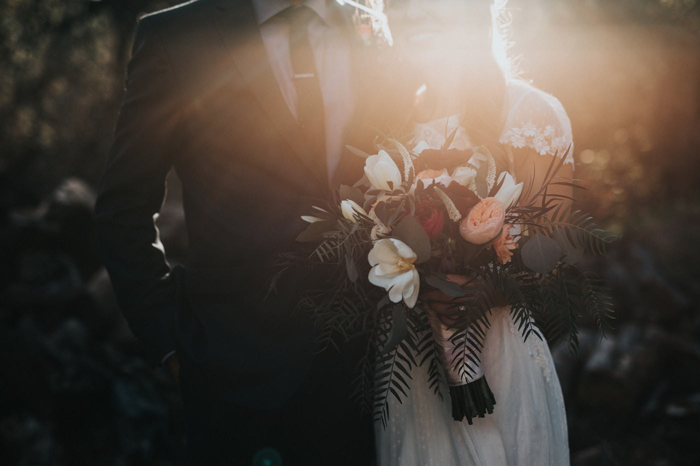
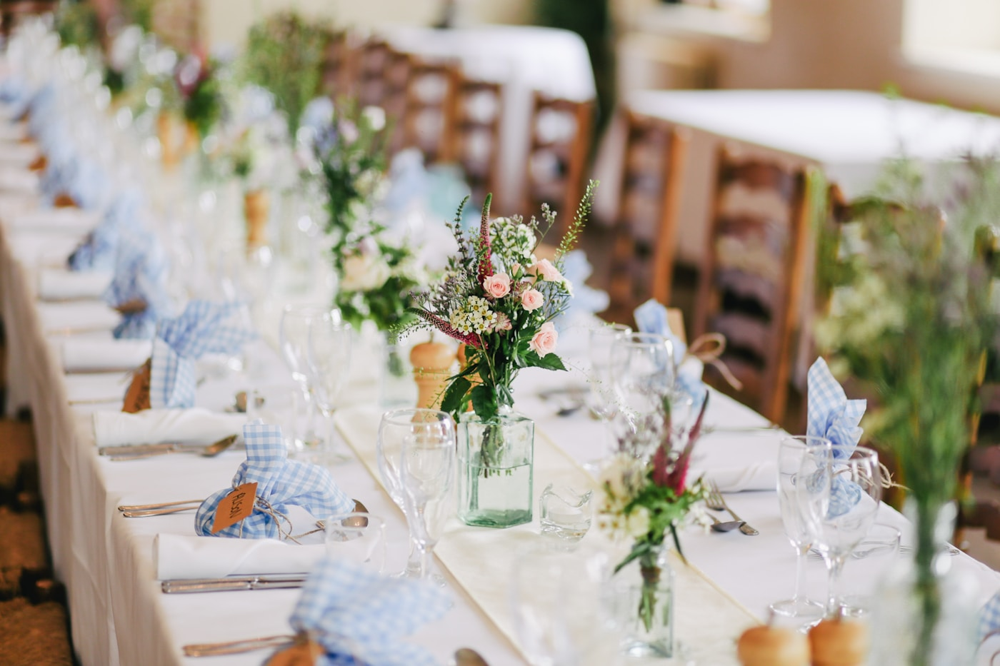

How to plan a wedding timeline
A calm schedule is the quiet secret behind relaxed wedding photographs. Here is how we build one with couples.
Component · Data display
A blog card is a single article in a listing: image, date, title and a two-line abstract, all one link to the post.
Use blog cards on the blog index, in search results and as related articles. For other content with a heading and text use a card; for photographs use a photo tile. Lay cards out with the grid: one column on phones, two or three above.
alt may be empty when the article image adds nothing.alt; optional.<time datetime> in overline type.h2 in the serif display style; underlined on hover and focus.The card is the same everywhere; the grid around it changes.
<article class="blog-card">
<a href="/blog/wedding-timeline">
<div class="blog-card__image"><img src="timeline.jpg" alt="Couple walking through a garden"></div>
<time datetime="2026-10-14">14 October 2026</time>
<h2>How to plan a wedding timeline</h2>
<p>A calm schedule is the quiet secret behind relaxed wedding photographs.</p>
</a>
</article>A calm schedule is the quiet secret behind relaxed wedding photographs. Here is how we build one with couples.
Colours, textures and comfort: simple choices that photograph beautifully.

The small things that hold the memory of a day.
A blog card has one size; the grid cell sets the width and the image keeps a 16:10 ratio.
The card is a link. The title underlines on hover and focus; the shared ring appears on the link. Pointer and focus are forced with data-state here.
| Variant | Default | Hover | Focus |
|---|---|---|---|
| With image | |||
| No image |
--color-bg-subtle and the card remains usable.Title and date use the default and muted foregrounds; the image frame uses --color-bg-subtle. The link colour is inherited so the card does not look like a blue link in either theme.
One native <a> wrapping the content of an <article>. Because the link contains a heading, the link name is its full text content; keep the abstract short so the name is not verbose, or move the link onto the heading and stretch it over the card with a pseudo-element. See the APG names and descriptions guidance.
| Key | Action |
|---|---|
| Tab / Shift+Tab | Moves to the card link and out. |
| Enter | Opens the article. |
| Esc | No effect. |
The shared 2px ring appears around the link, which encloses the whole card. Do not remove the outline. Heading order: card titles are h2 under a page h1.
The link is named by the date, title and abstract together; if that is too long, give the link aria-labelledby pointing to the title. Image alt describes the photograph, or is empty when it only repeats the title. The date uses <time datetime>.
Hover only underlines the title. There is no image zoom; it would shift content for motion-sensitive users.
The whole card is the target and far exceeds 44px. Keep at least 16px between cards.
Click here to read more about this post.
Read more| Part | Token | Light | Dark |
|---|---|---|---|
| Title | --color-fg-default | ||
| Date and abstract | --color-fg-muted | ||
| Image frame | --color-bg-subtle | ||
| Focus ring | --color-focus-ring | ||
| Image margin below | --space-5 | ||
| Title font | --text-h2 / --font-size-xl | / | |
| Date font | --text-overline | ||
| Abstract font | --text-body-sm | ||
<div class="grid grid--3">
<article class="blog-card">
<a href="/blog/wedding-timeline">
<div class="blog-card__image"><img src="timeline.jpg" alt="Couple walking through a garden"></div>
<time datetime="2026-10-14">14 October 2026</time>
<h2>How to plan a wedding timeline</h2>
<p>A calm schedule is the quiet secret behind relaxed wedding photographs.</p>
</a>
</article>
</div>| Class / attribute | Effect |
|---|---|
.blog-card | Article container; its <a> inherits colour and has no underline. |
.blog-card__image | 16:10 cropped frame. |
time, h2, p | Styled by the card: overline date, serif title, muted abstract. |
Extracted from these mocks:
Drift fixed during extraction: the mocks used .blog-post with a .blog-post-abstract class; the system renames it .blog-card and styles the plain time, h2 and p. The 13px abstract becomes the body-sm token. Search highlighting (mark) is not part of the component.